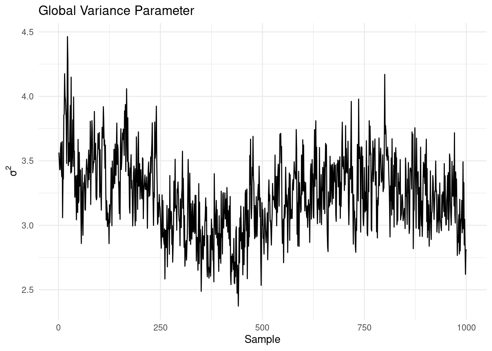
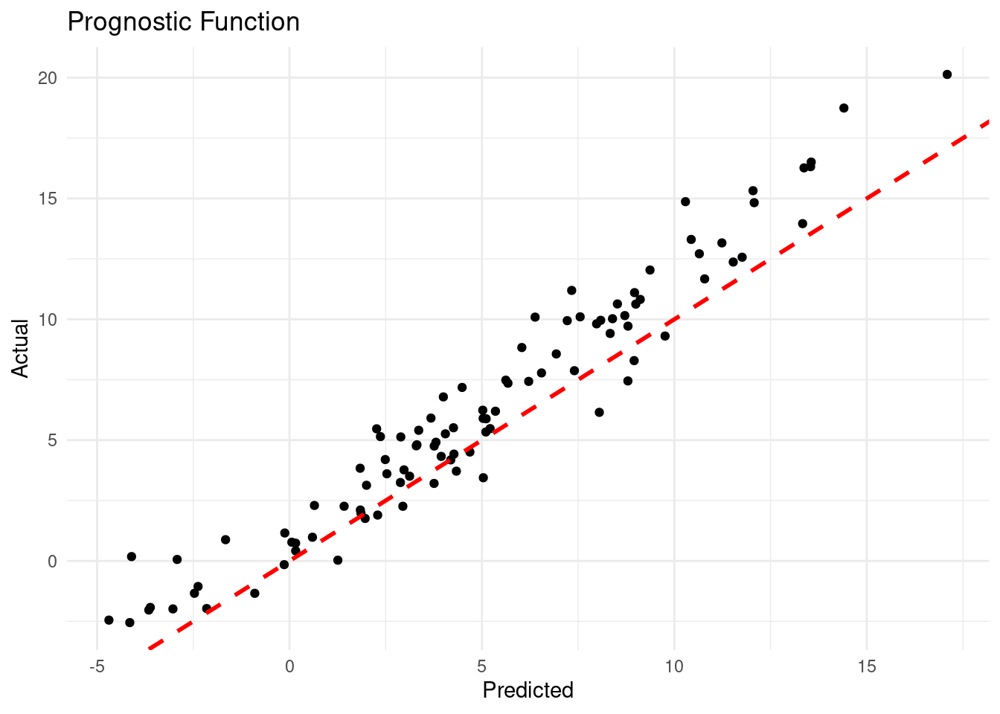
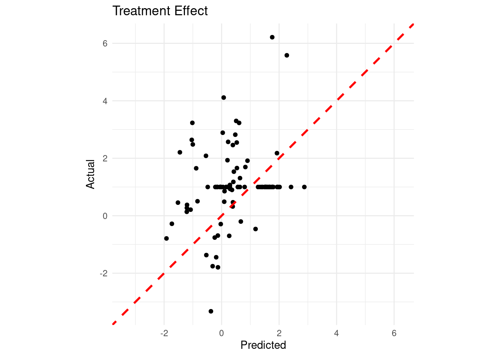

set.seed(1982)
# Define the functions based on the provided model
g <- function(x5) {
return(ifelse(x5 == 1, 2, ifelse(x5 == 2, -1, ifelse(x5 == 3, -4, 0))))
}
mu <- function(X) {
return(1 + g(X[, 5]) + 6 * abs(X[, 3] - 1))
}
tau <- function(X) {
return(1 + 2 * X[, 2] * X[, 4])
}
# Set parameters
n <- 500
snr <- 3
# Generate covariates
x1 <- rnorm(n)
x2 <- rnorm(n)
x3 <- rnorm(n)
x4 <- as.numeric(rbinom(n, 1, 0.5))
x5 <- as.numeric(sample(1:3, n, replace = TRUE))
X <- cbind(x1, x2, x3, x4, x5)
colnames(X) <- paste0("X", 1:5)
# Calculate mu(X) and tau(X)
mu_x <- mu(X)
tau_x <- tau(X)
# Calculate s_mu
s_mu <- sd(mu_x)
# Calculate pi(X)
pi_x <- 0.8 * pnorm((3 * mu_x / s_mu) - 0.5 * X[, 1]) + 0.05 + runif(n) / 10
# Generate treatment assignment Z
Z <- rbinom(n, 1, pi_x)
# Generate the outcome y
E_XZ <- mu_x + Z * tau_x
y <- E_XZ + rnorm(n, 0, 1) * (sd(E_XZ) / snr)
# Convert X to data frame and factorize categorical variables
X <- as.data.frame(X)
X$X4 <- factor(X$X4, ordered = TRUE)
X$X5 <- factor(X$X5, ordered = TRUE)
# Split data into test and train sets
test_set_pct <- 0.2
n_test <- round(test_set_pct * n)
n_train <- n - n_test
test_inds <- sort(sample(1:n, n_test, replace = FALSE))
train_inds <- setdiff(1:n, test_inds)
X_test <- X[test_inds, ]
X_train <- X[train_inds, ]
pi_test <- pi_x[test_inds]
pi_train <- pi_x[train_inds]
Z_test <- Z[test_inds]
Z_train <- Z[train_inds]
y_test <- y[test_inds]
y_train <- y[train_inds]
mu_test <- mu_x[test_inds]
mu_train <- mu_x[train_inds]
tau_test <- tau_x[test_inds]
tau_train <- tau_x[train_inds]17 Bayesian Causal Forest (BCF)
17.1 Introduction to Bayesian Causal Forest
While BART has proven to be a powerful tool for causal inference, it has some limitations when applied to heterogeneous treatment effect estimation. To address these shortcomings, Hahn, Murray, and Carvalho (2020) introduced the Bayesian Causal Forest (BCF) model. BCF builds upon BART’s foundation but incorporates key modifications that make it particularly well-suited for estimating heterogeneous treatment effects.
17.2 The BCF Model
The BCF model can be expressed as: \[ Y_i = \mu(x_i, \hat{\pi}(x_i)) + \tau(x_i)z_i + \epsilon_i, \quad \epsilon_i \sim N(0, \sigma^2) \]
where:
- \(Y_i\) is the outcome for individual \(i\)
- \(x_i\) are the covariates
- \(z_i\) is the treatment indicator
- \(\hat{\pi}(x_i)\) is an estimate of the propensity score
- \(\mu(\cdot)\) is the prognostic function
- \(\tau(\cdot)\) is the treatment effect function
The key innovation of BCF lies in its separation of the prognostic function \(\mu(\cdot)\) and the treatment effect function \(\tau(\cdot)\). Both functions are modeled using BART, but with different priors that reflect their distinct roles.
17.3 Key Features of BCF
- Separation of Prognostic and Treatment Effects: By modeling \(\mu(\cdot)\) and \(\tau(\cdot)\) separately, BCF allows for different levels of regularization for each component. This is particularly useful when the treatment effect is expected to be simpler or more homogeneous than the overall prognostic effect.
- Inclusion of Propensity Score: The inclusion of \(\hat{\pi}(x_i)\) in the prognostic function helps to mitigate issues related to regularization-induced confounding, which can occur when strong confounding is present.
- Targeted Regularization: BCF employs a prior on the treatment effect function that encourages shrinkage towards homogeneous effects. This can lead to more stable and accurate estimates, especially when the true treatment effect heterogeneity is modest.
- Handling of Targeted Selection: BCF is designed to perform well in scenarios where treatment assignment is based on expected outcomes under control, a phenomenon referred to as “targeted selection”.
- Improved Treatment Effect Estimation: BCF often yields more accurate and stable estimates of conditional average treatment effects (CATEs), especially in scenarios with strong confounding.
17.4 Examples
Let’s consider the following data generating process from Hahn, Murray, and Carvalho (2020), which is also covered in one of the vignettes from Herren et al. (2024).
\[ \begin{aligned} y &= \mu(X) + \tau(X) Z + \epsilon\\ \epsilon &\sim N\left(0,\sigma^2\right)\\ \mu(X) &= 1 + g(X) + 6 \lvert X_3 - 1 \rvert\\ \tau(X) &= 1 + 2 X_2 X_4\\ g(X) &= \mathbb{I}(X_5=1) \times 2 - \mathbb{I}(X_5=2) \times 1 - \mathbb{I}(X_5=3) \times 4\\ s_{\mu} &= \sqrt{\mathbb{V}(\mu(X))}\\ \pi(X) &= 0.8 \phi\left(\frac{3\mu(X)}{s_{\mu}}\right) - \frac{X_1}{2} + \frac{2U+1}{20}\\ X_1,X_2,X_3 &\sim N\left(0,1\right)\\ X_4 &\sim \text{Bernoulli}(1/2)\\ X_5 &\sim \text{Categorical}(1/3,1/3,1/3)\\ U &\sim \text{Uniform}\left(0,1\right)\\ Z &\sim \text{Bernoulli}\left(\pi(X)\right) \end{aligned} \]
Let’s generate data from this DGP and fit a BCF model using the {stochtree} package:
To sample using {stochtree} we can run the following code:
library(stochtree)
num_gfr <- 10
num_burnin <- 500
num_mcmc <- 1500
num_samples <- num_gfr + num_burnin + num_mcmc
bcf_model_warmstart <- bcf(
X_train = X_train,
Z_train = Z_train,
y_train = y_train,
pi_train = pi_train,
X_test = X_test,
Z_test = Z_test,
pi_test = pi_test,
num_gfr = num_gfr,
num_burnin = num_burnin,
num_mcmc = num_mcmc,
sample_sigma_leaf_mu = F,
sample_sigma_leaf_tau = F
)After fitting the model, it’s crucial to assess convergence. One way to do this is by examining the traceplot for \(\sigma^2\):
library(ggplot2)
df <- tibble::tibble(
sample = 1:length(bcf_model_warmstart$sigma2_samples),
sigma2_samples = bcf_model_warmstart$sigma2_samples
)
# Create the plot
ggplot(df, aes(x = sample, y = sigma2_samples)) +
geom_line() +
labs(
x = "Sample",
y = expression(sigma^2),
title = "Global Variance Parameter"
) +
theme_minimal()
The traceplot shows no obvious trends, suggesting that the MCMC chain has likely converged. Next, we can evaluate the model’s performance in predicting the prognostic function:
df <- tibble::tibble(
predicted = rowMeans(bcf_model_warmstart$mu_hat_test),
actual = mu_test
)
# Create the plot
ggplot(df, aes(x = predicted, y = actual)) +
geom_point() +
geom_abline(
slope = 1,
intercept = 0,
color = "red",
linetype = "dashed",
linewidth = 1
) +
labs(x = "Predicted",
y = "Actual",
title = "Prognostic Function") +
theme_minimal()
The plot shows a strong correlation between predicted and actual values of the prognostic function, indicating that the BCF model has captured the nonlinear relationships in the data well.
Given that we know the true data generating process, we can assess how well the model estimates the true treatment effects:
df <- tibble::tibble(
predicted = rowMeans(bcf_model_warmstart$tau_hat_test),
actual = tau_test
)
# Calculate the limits for the axes
limits <- range(c(df$predicted, df$actual))
# Create the plot
ggplot(df, aes(x = predicted, y = actual)) +
geom_point() +
geom_abline(slope = 1, intercept = 0, color = "red", linetype = "dashed", linewidth = 1) +
labs(
x = "Predicted",
y = "Actual",
title = "Treatment Effect"
) +
coord_fixed(ratio = 1, xlim = limits, ylim = limits) +
theme_minimal()
Finally, let’s check our coverage:
test_lb <- apply(bcf_model_warmstart$tau_hat_test, 1, quantile, 0.025)
test_ub <- apply(bcf_model_warmstart$tau_hat_test, 1, quantile, 0.975)
cover <- (
(test_lb <= tau_x[test_inds]) &
(test_ub >= tau_x[test_inds])
)
cat("95% Credible Interval Coverage Rate:", round(mean(cover) * 100, 2), "%\n")95% Credible Interval Coverage Rate: 90 %17.5 Conclusion
Bayesian Causal Forest represents a significant advancement in the application of tree-based methods to causal inference. By building upon the strengths of BART and addressing some of its limitations, BCF offers a powerful tool for estimating heterogeneous treatment effects. Its ability to handle strong confounding and targeted selection, coupled with its interpretability, makes it a valuable addition to the causal inference toolkit.
However, like all methods, BCF has its limitations. It assumes that all relevant confounders are observed, and its performance can degrade in scenarios with limited overlap between treated and control units. As always in causal inference, careful consideration of the problem at hand and the assumptions of the method is crucial.
Learn more
Hahn, Murray, and Carvalho (2020) Bayesian regression tree models for causal inference: Regularization, confounding, and heterogeneous effects (with discussion).